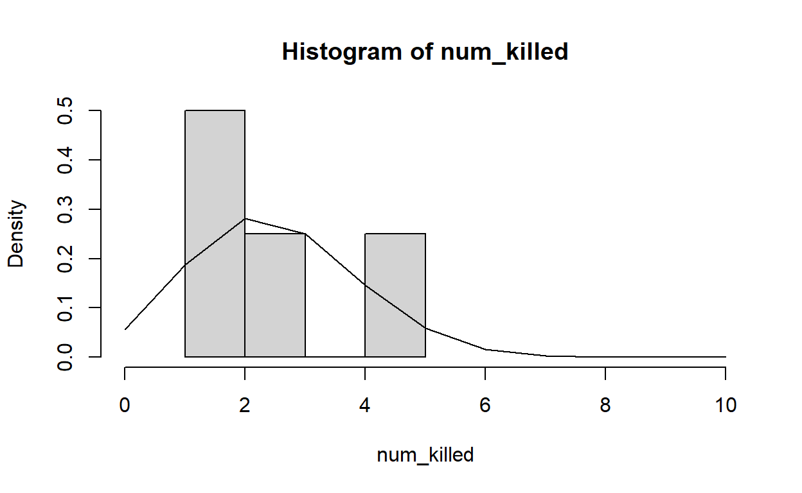
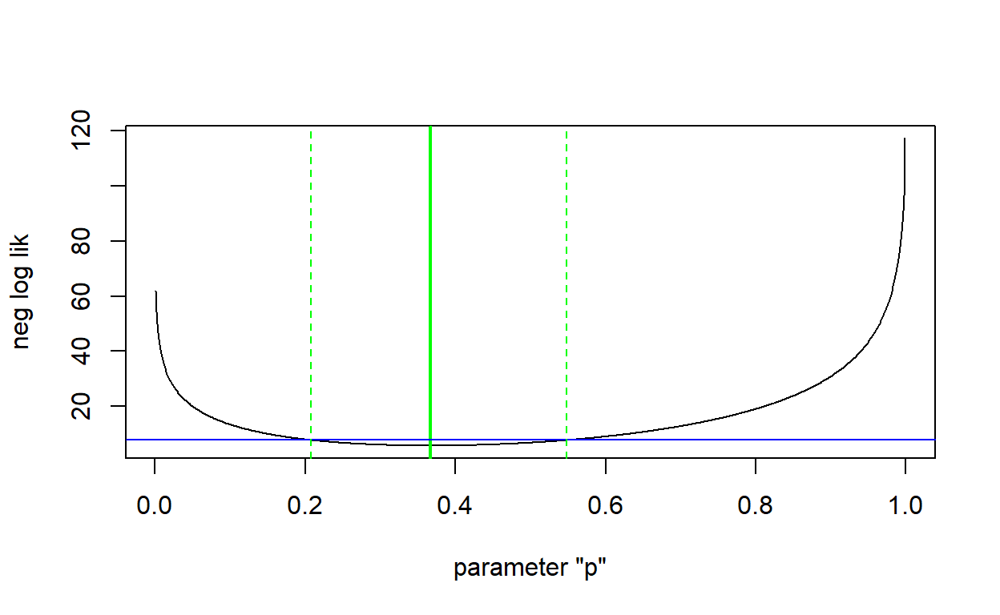

Maximum likelihood and optimization
These next few weeks are focused on fitting models, specifically estimating model parameters and confidence intervals, using likelihood techniques. Estimating model parameters means finding the values of a set of parameters that best ‘fit’ the data. Likelihood is a metric that represents the probability of drawing your particular data set given a fully specified model (e.g., a particular set of parameter values for a particular data-generating model). This lab is designed to take two lab sessions to complete.
As with all lab reports, your answers will either take the form of R functions or short written responses (submitted together in a Word document). The R functions (and only the functions- not your testing code) should be stored in an R script file (‘.R’ extension). To allow me to evaluate your work more efficiently, please name your R script using the following convention: "[your first name]_[your last name]_lab3.R“. So my submission would be”kevin_shoemaker_lab3.R". The name of your Word docuement doesn’t matter, as long as you submit via WebCampus.
Please submit the R script and the Word document via WebCampus by midnight on the due date (one week after the final lab session allocated for this topic – here, Oct. 23, 2018). You can work in groups but please submit the materials individually.
First, take a little time to review the likelihood lecture!
Example: reed frog predation data
First, load the reed frog predation data from the Bolker book- it can be found here. Save this file to your working directory.
This dataset represents predation data for Hyperolius spinigularis (Vonesh and Bolker 2005). You can read more about this data set in the Bolker book.
###### Read in the reed frog data set
rfp <- read.csv("ReedfrogPred.csv")
head(rfp)Parameter estimation is simplest when the data represent a collection of independent observations, with each observation having the same set of parameters. Because predation on tadpoles is size and density-dependent, we will subset these data to a single size class (‘small’) and density (10) for all treatments including a predator. Subset your data now:
##### Take a subset of the data
rfp_sub <- subset(rfp, (rfp$pred=='pred')&(rfp$size=="small")&(rfp$density==10))
rfp_subFor each individual, the per-trial probability of being eaten by a predator is a binomial process (i.e., they can survive or die during the interval). Recall that the likelihood that k out of N individuals are eaten as a function of the per capita predation probability p is:
\(Prob(k|p,N) = \binom{N}{k}p^{k}(1-p)^{N-k}\)
Since the observations are independent, the joint likelihood of the whole data set is the product of the likelihood of each individual observation. So, if we have n observations, each with the same total number of tadpoles N, and the number of tadpoles killed in the ith observation is ki, then the likelihood is:
\(L = \prod_{i=1}^{n}\binom{N}{k_{i}}p^{k_{i}}(1-p)^{N-k_{i}}\)
Here we assume the data are binomially distributed – the binomial distribution is the natural choice for data that are represented as k ‘successes’ out of N ’trials. We conventionally work in terms of the log-likelihood (LL), which is:
\(LL = \sum_{i=1}^{n}\left [log\binom{N}{k}+k_{i}log(p)+(N-k_{i})log(1-p) \right ]\)
In R this would be
killed <- rfp_sub$density-rfp_sub$surv
N=rfp_sub$density
p=0.5
sum(dbinom(killed, size=N, prob=p, log=TRUE)) # expression of data likelihoodThere is only one parameter in this calculation, p, because we know how many individuals we started with (N = 10 for each trial) and how many survived in each trial (k = 7, 5, 9, and 9). So we want to solve for the most likely value of p given our observations of N and surv. In essence we do this by picking a possible value of p (which can only range from 0 to 1), calculating the log-likelihood (LL) using the equation above, picking another value of p, completing the equation, etc. until we exhaust all possible values of p and identify the one having the highest likelihood value. Of course R has useful built in functions to help us!
The “dbinom()” function calculates the binomial likelihood for a specified data set, specifically a vector of the number of successes (or events) k, probability p, and number of trials N. Specify your vector of successes (here a success means being eaten by a predator!):
num_killed <- rfp_sub$density-rfp_sub$surv # specify vector of "successes" (being eaten!)
num_killed## [1] 3 5 1 1Given our observed k (number killed), and N = 10 for each trial, what is the likelihood that p = 0.5 for each of our trials?
dbinom(num_killed,size=10,prob=0.5) # evaluate data likelihood with p=0.5## [1] 0.117187500 0.246093750 0.009765625 0.009765625[1] 0.117187500 0.246093750 0.009765625 0.009765625
We can see that given our data, fixed sample size, and model (with p = 0.5), our observed outcomes are very unlikely.
What is the likelihood of observing all 4 of our outcomes, i.e, the joint probability of our data?
prod(dbinom(num_killed,size=10,prob=0.5)) # joint data likelihood## [1] 2.750312e-06The joint likelihood values will be less than 1, and gets smaller and smaller each time we add more data (can you see why?). This is why we prefer to work with log-likelihoods (which yield larger numbers having better mathematical properties). And taking the log of value <1 yields a negative number, which is why we often see that our log likelihood values are negative.
For now, we can build on this above process to estimate the likelihood function over the entire possible parameter space (probability of being eaten- which can range from 0 to 1).
First we make a sequence of 100 possible parameter values from 0.01 to 1.
p <- seq(0.01, 1, by=0.01) # prepare for visualizing the likelihood across parameter spaceThen we make an empty storage vector for the likelihoods we’ll calculate
Lik <- numeric(length=100)Now for the for loop! For every value of p (a sequence of 100 values) we will calculate the binomial probability and store it in the ‘Lik’ vector.
#########
# plot out the likelihood
for(i in 1:100){
Lik[i] <- prod(dbinom(num_killed,size=10,prob=p[i]))
}
plot(Lik~p,lty="solid",type="l", xlab="Predation Probability", ylab="Likelihood")
But we want to maximize the log-likelihood:
########
# plot out the log-likelihood
p <- seq(0.01, 1, by=0.01)
LogLik <- numeric(length=100)
for(i in 1:100){
LogLik[i] <- sum(dbinom(num_killed, size=10,
prob=p[i],log=TRUE))
}
plot(LogLik~p,lty="solid",type="l", xlab="Predation Probability", ylab="Log Likelihood")We can ask R to tell us at which value of p the LL is maximized:
p[which(LogLik==max(LogLik))] # MLE for probability of predation## [1] 0.25And we can add an “abline()” to indicate the maximum Log-Likelihood estimate:
plot(LogLik~p,lty="solid",type="l", xlab="Predation Probability", ylab="Log Likelihood")
abline(v=0.25,lwd=3)
Alternatively, we can use the optim() or mle2() functions to find the maximum likelihood estimate. Although we seek the most likely, or maximum likelihood estimate, in practice we generally minimize the negative log-likelihood. To do so, first write a function to calculate the binomial negative log-likelihood function and estimate parameter p.
###########
# Write a likelihood function
# p: probability of predation per trial (param to estimate)
# k: number killed per trial (data)
# N: number of tadpoles per trial (data)
binomNLL1 <- function(p, k, N) {
-sum(dbinom(k, size=N, prob=p, log=TRUE))
}As we did in class, you can use the ‘optim()’ function to minimize your negative log-likelihood function (‘binomNLL1()’) given a vector of starting parameters and your data. The starting parameters need not be accurate, but do need to be reasonable for the function to work, that’s why we spent time in class eyeballing curves (also read the Bolker book for a discussion of the ‘method of moments’, which can help you get reasonable starting values!). Given that there is only one estimable parameter, p, in the binomial function, you need only provide a starting estimate for it. Calculate the negative log-likelihood:
#####
# use "optim()" to find the MLE
opt1 <- optim(fn=binomNLL1, par = c(p=0.5), N = 10, k = num_killed, method = "BFGS") # use "optim()" to estimate the parameter value that maximizes the likelihood function ## Warning in dbinom(k, size = N, prob = p, log = TRUE): NaNs produced
## Warning in dbinom(k, size = N, prob = p, log = TRUE): NaNs produced
## Warning in dbinom(k, size = N, prob = p, log = TRUE): NaNs produced
## Warning in dbinom(k, size = N, prob = p, log = TRUE): NaNs produced
## Warning in dbinom(k, size = N, prob = p, log = TRUE): NaNs producedYou may get several warning messages, can you think why? opt1 returns a list that stores information about your optimization process.
opt1 # check out the results of "optim()"## $par
## p
## 0.2500002
##
## $value
## [1] 7.571315
##
## $counts
## function gradient
## 17 7
##
## $convergence
## [1] 0
##
## $message
## NULLThe important bits are whether or not the process achieved convergence and the parameter estimate that was converged upon.
opt1$convergence## [1] 0Here a value of 0 means convergence has been achieved, a value of 1 means the process failed to converge. There is more info about convergence and alternative optimization options in Chapter 7 of the Bolker book.
Your best fit estimate of p is:
opt1$par # MLE## p
## 0.2500002This numerically computed answer is (almost exactly) equal to the theoretical answer of 0.25. The value of the function you optimized, binomNLL1, is:
opt1$value # max. likelihood (actually minimum negative-log-likelihood)## [1] 7.571315which is the negative log-likelihood for the model. And, as we already know, the absolute likelihood of this particular outcome (5, 3, 1 and 1 out of 10 tadpoles eaten in four replicates) is quite low:
exp(-opt1$value) # convert to likelihood## [1] 0.0005150149Plot your observed outcomes against your predictions under the maximum likelihood model:
hist(num_killed,xlim=c(0,10),freq=F)
curve(dbinom(x,prob=opt1$par,size=10),add=T,from=0,to=10,n=11)
Note that “freq=F” scales the y-axis of a histogram to “density”, which allows us to overlay probability density functions.
Exercise 3.1
NOTE: we went through this simple example as part of the MLE lecture, so you may already have this one done!
Develop a function that returns the data likelihood (likelihood function) for the following scenario: you visit three known-occupied wetland sites ten times and for each site you record the number of visits for which a particular frog species is detected (at least one call within a 5 minute period). Assuming that all sites are occupied continously, compute the likelihood of these data: [3,2 and 6 detections for sites 1, 2, and 3 respectively] for a given detection probability \(p\). Assume that all sites have the same unknown detection probability (p, which is our free parameter). Using this likelihood function, answer the following questions:
Exercise 3.1a.
Write a function called “NLL_frogOccupancy()” for computing the data likelihood for the above scenario.
- input:
- params = a scalar (floating point) specifying a proposal for the parameter “p” (probability of detection for a single visit)
- data = a vector of integers with number of elements equal to the number of sites, representing the number of times the species was detected out of N visits.
- N = an integer representing the total number of visits conducted at each site (default= 10 visits)
- params = a scalar (floating point) specifying a proposal for the parameter “p” (probability of detection for a single visit)
- suggested algorithm:
- up to you!
- return:
- the negative log likehood of all observations (use binomial distribution)
And test your function!
NLL_frogOccupancy(params=0.5,data=c(3,2,6),N=10) # test your function## [1] 6.853154Include your function in your submitted r script!
You can use this “sandbox” (below) to develop and test your function!
NLL_frogOccupancy <- function(params,data,N){
# [add code here!]
}
NLL_frogOccupancy(params=0.5,data=c(3,2,6),N=10)check_q3.1a <- function(USER_CODE){
code <- checkr::for_checkr(USER_CODE)
func_call <- checkr::line_where(code,checkr::insist(F== "NLL_frogOccupancy","Use NLL_frogOccupancy() function!"))
t1 <- checkr::line_where(func_call,
checkr::insist(any(dplyr::near(6.853154,V,tol=0.01)), "Sorry, that's not correct"),
checkr::passif(TRUE, "Excelente!"))
}
check_q3.1a(USER_CODE)Exercise 3.1b.
In your Word document, respond briefly to the following questions:
- What is the maximum likelihood estimate for the p (detection probability) parameter?
- Using the “rule of 2”, what is the approximate 95% confidence interval for the p parameter. Include a figure illustrating how you got your answer.

Adding a Deterministic Relationship
So we’ve looked at how to obtain the likelihood of getting our dataset given a stochastic model (the binomial distribution), but now we want to consider more interesting ecological questions like when the mean or variance of the model parameters vary among groups or depend upon covariates. Recall that we subset our data above because we expected survival to be (in part) density-dependent. Here we’ll consider how to model the probability of tadpole survival as a function of the initial density of tadpoles in the population. To do so, we need to incorporate a deterministic function into our stochastic model.
Save the reed frog functional response dataset to your working directory- it can be found here.
First, examine the first few lines:
#####
# 3.2a
rffr <- read.csv("ReedfrogFuncResp.csv",row.names = 1)
# alternative: data(ReedfrogFuncresp) # from Bolker's "emdbook" package
# ?Reedfrog # learn more about this dataset
head(rffr)Let’s look at the distribution of the data (probability of being killed).
hist(rffr$Killed/rffr$Initial)Based on what we know mechanistically about the data, we’ll use a binomial distribution to describe the observed number killed.
Plot the number killed by the initial density (using plot()) to see what sort of deterministic function would describe the pattern. It looks like it could be linear, but because we know that this is a predation response, and that predators become handling-limited (saturated) at high prey densities. On page 182 Bolker indicates that if predation rate= \(aN/(1+ahN)\) (Holling Type II functional response), this means that the per-capita predation rate of tadpoles decreases hyperbolically with tadpole density \((= a/(1 + ahN))\). We’ll use this deterministic function for our data.
First, let’s see what that curve would look like over our data points with an initial guess at the parameters (we always need an initial guess to seed our optimization algorithms). Recall that the a parameter of this hyperbolic function indicates the initial slope, which we’ll guess to be around 0.5, and the h parameter indicates 1/asymptote, which we fiddled around with to match the data (so try 1/80).
#########
# define a Holling type II functional response, with an initial guess about parameter values
Holl2<-function(x, a, h){(a*x)/(1+(a*h*x))}
plot(rffr$Killed~rffr$Initial)
curve(Holl2(x, a=0.5, h=1/80), add=TRUE,col="red")
This looks pretty good, but we want to actually fit the line to the data instead of making guesses, and we’ll use likelihood to do that. Just like before, we’ll write a negative log likelihood function, but this time we’ll incorporate the deterministic model.
###########
# Write a likelihood function
# params: vector of params to estimate (a and h from the Holling type II functional response)
# k: number killed per trial (data)
# N: number of tadpoles per trial (data)
binomNLL2<-function(params,N,k){
a=params[1]
h=params[2]
predprob=a/(1+a*h*N)
-sum(dbinom(k,prob=predprob,size=N,log=TRUE))
}This likelihood function says that the structure of the data is described by a binomial distribution (either killed or not), and that the probability of predation (the number killed divided by the initial number) is explained by the Holling type II equation.
Now we’ll find the parameter values that best describe these data using ‘optim()’. We’ll use the same initial values for a and h that we used to plot the curve. N is the initial number of tadpoles, and k is the number of tadpoles killed.
opt2 <- suppressWarnings( optim(fn=binomNLL2, par=c(a=0.5,h=(1/80)), N=rffr$Initial, k=rffr$Killed) ) #use default simplex algorithm
opt2## $par
## a h
## 0.52593924 0.01660613
##
## $value
## [1] 46.72136
##
## $counts
## function gradient
## 53 NA
##
## $convergence
## [1] 0
##
## $message
## NULLThe results are not that different from our starting values, so we made a good guess.
Exercise 3.2a.
Reed frog functional response challenge: fit a Holling type II relationship!
Write a function called “Rffuncresp()” for computing the data likelihood and plotting the goodness-of-fit for this model.
- input:
- params = vector of initial values for the params to estimate (length 2: a and h from the Holling type II functional response)
- data = a matrix of 2 columns and one row per observation. The first column should represent the initial tadpole densities, and the second column should represent the number killed (eaten by dragonfly larvae).
- params = vector of initial values for the params to estimate (length 2: a and h from the Holling type II functional response)
- suggested algorithm:
- Compute the MLE for the a and h parameters of the Holling Type II relationship.
- Plot the observed number killed (y axis) vs the initial densities
- Overlay a line to visualize your initial guess (initial values)
- Overlay another line to visualize the predictions based on the MLE parameters.
- Finally, visualize “prediction intervals” around your MLE line to make a plot like Figure 6.5a in the Bolker book. You can use “qbinom()” to define the 95% quantiles of the binomial distribution for every point along your curve (see below).
- Compute the MLE for the a and h parameters of the Holling Type II relationship.
- return:
- a vector of length 2 containing the MLE for the a and h parameters
inits <- c(a=0.6,h=(1/60)) # test the function
Rffuncresp(params=inits,data=rffr)
## a h
## 0.52592194 0.01660555NOTE: the “prediction interval” you are asked to generate here is sometimes called a “plug-in” prediction interval, and is a quick and dirty way to assess goodness-of-fit. Essentially, you just take the best-fit model (with parameter values at their MLE values) and use the 0.025 and 0.975 quantiles of the “noise” process to define the range of data that would generally be produced under this model. NOTE: In “qbinom()”, for the “prob” argument, you can use the ratio of the x and y values to get a probability value from 0-1. For example:
########
# how to generate plug-in prediction intervals
xvec <- seq(40,80,5)
yvec <- 0.5/(1+0.5*0.015*xvec) * xvec
upper<-qbinom(0.975,prob=yvec/xvec, size=xvec)
lower<-qbinom(0.025,prob=yvec/xvec, size=xvec)
upper
lowerInclude your function in your submitted r script!
You can use this “sandbox” (below) to develop and test your function!
Rffuncresp <- function(params,data){
# [add code here!]
}
Rffuncresp(params=c(a=0.5,h=(1/30)),data=rffr)check_q3.2a <- function(USER_CODE){
code <- checkr::for_checkr(USER_CODE)
func_call <- checkr::line_where(code,checkr::insist(F== "Rffuncresp","Use Rffuncresp() function!"))
t1 <- checkr::line_where(func_call,
checkr::insist(any(dplyr::near(0.01660342,V,tol=0.01)), "Sorry, that's not correct"),
checkr::passif(TRUE, "Bravo!"))
}
check_q3.2a(USER_CODE)Exercise 3.2b.
In your Word document, respond briefly to the following questions:
Try some different starting values for the a and h parameters. Can you find any starting values that are so bad they cause the optimization algorithm (default algorithm used by “optim()” function in R) to fail?
Bolker calls the prediction interval you generated above a plug-in prediction interval. In what way(s) is this interval different than a true prediction interval? (hint: are there are any sources of error that the plug in interval ignores?)
Review of the MLE process
Step 1. Identify the response and explanatory variables (e.g., Predation probability and Initial Population Size). Just stating what the response and explanatory variables are will help you start modeling.
Step 2. Determine the stochastic distribution (e.g., Binomial). In this case, the stochastic distribution was easy to identify because we chose it mechanistically. Other times it may not be so clear what the best distribution is, and looking at the histogram and plotting different distributions over the top will be helpful.
Step 3. Specify the deterministic function (e.g., Holling type II). Again, we chose this function mechanistically, but we could have chosen different functions just by looking at the plot of the points.
Step 4. Specify the likelihood of the data given our deterministic expectations and the stochastic distribution. Our negative log likelihood function combined the stochastic and deterministic elements together by having the stochastic parameter (in this case the binomial probability, p) be dependent upon the deterministic parameters.
Step 5. Make a guess for the initial parameters (e.g., a=0.5, h=1/80). You need to have an initial guess at the parameters to make ‘optim()’ work, and we plotted the Holling curve to make our guess. Sometimes you will also need to make a guess at the parameters for the stochastic distribution. In these cases, the method of moments is often the best option (see Bolker book for details).
Step 6. Estimate the best-fit parameters using maximum likelihood. We used optim() to search through all possible value combinations of parameters a and h to estimates for those parameters that correspond to the minimum negative log-likelihood.
Step 7. Add confidence intervals around your estimates. We calculated some plug-in estimates to put “pseudo-prediction intervals” around our estimates based on the stochastic distribution.
Exploring Likelihood Surfaces and Confidence Regions
Let’s continue the myxomatosis virus titer example from the optimization lecture. The difference is that this time we’ll model a deterministic process (decay of viral loads over time) in addition to the stochastic process. Our goal is to fit a model to data on viral titers through time for the viruses that are grade 1. Biological common sense, and data from other titer levels, tells us to expect titer levels to start at zero, increase over time to a peak, and then to decline. Given those expectations, we’ll fit a Ricker model to these data, following Bolker’s example and extending it just a bit.
Our goals are to:
- Find the maximum likelihood estimates of the parameters of the Ricker model fit to the myxomytosis data.
- Visualize the fit of this model to the data by:
- Plotting the data
- Adding the predicted Ricker curve
- Adding plug-in confidence intervals
- Plot the 2-dimensional likelihood surface for the parameters of the Ricker and add the bivariate 95% confidence interval
You can add the data from the ‘emdbook’ package:
#######
# Exercise 3.3a
########
# Myxomatosis data
library(emdbook)
data(MyxoTiter_sum) # load the data
head(MyxoTiter_sum) Select just the grade 1 titers:
myxdat <- subset(MyxoTiter_sum, grade==1) # select just the least virulent strain
plot(myxdat$titer~myxdat$day,xlim=c(0,10)) # visualize the relationship
Exercise 3.3:
Fit a Ricker model to the myxomatosis data (see below for step-by step instructions)
Exercise 3.3a.
Write a function called “NLL_myxRicker()” for computing the data likelihood and plotting the goodness-of-fit for this model.
- input:
- params = vector of initial values for the params to estimate (length 3: a and b params from the Ricker model [see below], and the “shape” parameter of the Gamma distribution)
- data = a matrix of 2 columns and one row per observation. The first column should represent the days since infection, and the second column should represent the virus titer.
- params = vector of initial values for the params to estimate (length 3: a and b params from the Ricker model [see below], and the “shape” parameter of the Gamma distribution)
- suggested algorithm:
- Compute the deterministic function: use a Ricker equation to model the expected (mean) virus titer as a function of days since infection
- Compute the “scale” parameter of the Gamma distribution as a function of (1) mean virus titer and (2) the “shape” parameter of the Gamma distribution [NOTE: the variance and the mean of the Gamma distribution are dependent- so we can’t simply model the expected value and the noise separately! See below for more detals]
- Compute the sum of the negative log-likelihoods of all observations (use the “dgamma()” function)
- return:
- the sum of the negative log-likelihoods of all observations
NLL_myxRicker(params=c(a=4,b=0.2,shape=40),data=myxdat[,-1]) # test the function## [1] 35.39427This task (develop likelihood function) can be broken down into a few steps, just like we did above!
Our question is: how does a virus titer change in rabbits as a function of time since infection? This is almost exactly the same problem as we just did (above), but we’re using different distributions and functions. To solve the problem, you’ll need to go through the same steps outlined above.
Step 1. Identify the response and explanatory variables. The response is the virus titer and the explanatory variable is the days since infection.
Step 2. Determine the stochastic distribution.
Start by plotting the histogram of the response variable. Bolker suggests a gamma distribution – does it look like a gamma would work? Write down the parameters for the gamma distribution (page 133). (For the gamma distribution, use with the shape and scale parameters (not the rate)).
Step 3. Specify the deterministic function.
Plot the data points (hint: look at figure 6.5b). Bolker suggests the Ricker curve – does it look like the Ricker curve would work? (Note that grade 1 virus is so virulent that most rabbits die before the titer has a chance to drop off entirely) Write down the equation and parameters for the Ricker curve (page 94).
Step 4. Specify the likelihood of the data given our deterministic expectations and the stochastic distribution. Take a moment to think how the parameters of the stochastic distribution are determined by the parameters of the deterministic function. For the gamma distribution, both the shape and scale parameters are related to the mean of the distribution, i.e., mean = shape × scale (page 133). So how will you specify that the deterministic function (the Ricker model) should represent the mean? What parameters do you need your (negative) log-likelihood function to estimate? Write out your negative log-likelihood function to solve for the likelihood.
ASIDE: the mean and variance of the gamma distribution are inter-related: the shape parameter can be specified as: \(\frac{mean^2}{var}\) and the scale parameter can be specified as \(\frac{var}{mean}\)!
Include your function in your submitted r script!
You can use this “sandbox” (below) to develop and test your function!
NLL_myxRicker <- function(params,data){
# [add code here!]
}
NLL_myxRicker(params=c(a=2,b=0.1,shape=80),data=myxdat[,-1])check_q3.3a <- function(USER_CODE){
code <- checkr::for_checkr(USER_CODE)
func_call <- checkr::line_where(code,checkr::insist(F== "NLL_myxRicker","Use NLL_myxRicker() function!"))
t1 <- checkr::line_where(func_call,
checkr::insist(any(dplyr::near(113.6802,V,tol=0.01)), "Sorry, that's not correct"),
checkr::passif(TRUE, "Bravissimo!"))
}
check_q3.3a(USER_CODE)Exercise 3.3b.
Write a function called “MyxRicker()” for computing the maximum likelihood estimates and plotting the goodness-of-fit for this model.
- input:
- params = vector of initial values for the params to estimate (length 3: a and b params from the Ricker model [see below], and the “shape” parameter of the Gamma distribution)
- data = a matrix of 2 columns and one row per observation. The first column should represent the days since infection, and the second column should represent the virus titer.
- params = vector of initial values for the params to estimate (length 3: a and b params from the Ricker model [see below], and the “shape” parameter of the Gamma distribution)
- suggested algorithm:
- Compute the MLE for the a, b, and shape parameters for the Ricker/Gamma model (use “optim()” with the likelhood function you just wrote and the initial values in “params”).
- Plot the observed virus titer (y axis) vs the days since infection (x axis).
- Overlay a line to visualize your predictions from the Ricker model (expected values) based on the MLE parameters (just the Ricker parameters).
- Finally, visualize “plug-in prediction intervals” around your MLE line to make a plot like Figure 6.5a in the Bolker book. Hint: use “qgamma()” to define the 95% quantiles of the Gamma distribution for every point along your curve (see below).
- Compute the MLE for the a, b, and shape parameters for the Ricker/Gamma model (use “optim()” with the likelhood function you just wrote and the initial values in “params”).
- return:
- a vector of length 3 containing the MLE for the a, b, and shape parameters
MyxRicker(params=c(a=2,b=0.2,shape=30),data=myxdat[,-1]) # test the function## a b shape
## 3.5611591 0.1713262 90.5287907To complete this exercise will involve going through the final steps (5-7) in the process outlined above:
Step 5. Make a guess for the initial parameters. We need initial parameters to put into “optim()”. Remember that the Ricker curve parameters can be estimated based on the initial slope and maximum (see pg. 95). Try plotting the curve over the points to get an approximate fit. There really isn’t any easier way to get there than trial and error for the deterministic function.
Step 6. Estimate the best fit parameters using maximum likelihood.
Now use ‘optim()’ to get your maximum likelihood parameter estimates.
Step 7. Add confidence/prediction intervals around your estimates.
After your run of ‘optim()’ (did you achieve convergence?), plot your fitted Ricker curve to your data. Revisit the earlier prediction interval code to add plug-in prediction intervals around your predicted curve based on gamma distributed errors (should resemble Figure 6.5b on page 184 of text).
Use the “qgamma()” function to build your plug-in intervals!
########
# Plug-in prediction intervals!
upper<-qgamma(0.975,shape=?, scale=?) # remember that the mean of the gamma distribution is shape*scale
lower<-qgamma(0.025,shape=?, scale=?)Include your function in your submitted r script!
You can use this “sandbox” (below) to develop and test your function!
MyxRicker <- function(params,data){
# [add code here!]
}
MyxRicker(MyxRicker(params=c(a=1,b=0.1,shape=30),data=myxdat[,-1]))check_q3.3b <- function(USER_CODE){
code <- checkr::for_checkr(USER_CODE)
func_call <- checkr::line_where(code,checkr::insist(F== "MyxRicker","Use MyxRicker() function!"))
t1 <- checkr::line_where(func_call,
checkr::insist(any(dplyr::near(90.5465792,V,tol=0.01)), "Sorry, that's not correct"),
checkr::passif(TRUE, "Niiiice!"))
}
check_q3.3b(USER_CODE)Exercise 3.4: 2-dimensional likelihood surface
Making “plug-in” confidence intervals looks nice on the plot (and is a useful, quick-and-dirty way to assess goodness-of-fit), but if we also want to visualize parameter uncertainty (and not just uncertainty arising from the stochastic component) we need to consider other plausible parameter values from our n-dimensional likelihood surface (with as many dimensions as there are free parameters).
Exercise 3.4a.
Make a function called “MyxRicker_ci()” that takes any two parameters from your myxomatosis model as inputs (holding any remaining parameters constant) and visualizes how the likelihood changes across this 2D parameter space. What we’ll end up with will look something like Figure 6.7 in the Bolker book.
- input:
- LikFunc = a likelihood function for the Myxomatosis data (use the function you developed for Exercise 3a [NLL_myxRicker()])
- params = vector of initial values for the params to estimate (length 3: a and b params from the Ricker model [see below], and the “shape” parameter of the Gamma distribution)
- params_selected = character vector of length 2 (character strings) indicating which two parameters to visualize (holding the other one constant) (the vector should contain two of the following text strings: “a”, “b”, and “shape”)
- data = a matrix of 2 columns and one row per observation. The first column should represent the days since infection, and the second column should represent the virus titer.
- param1_lims = a vector of length 2 specifying the lower and upper bounds of the first parameter specified in “params_selected”
- param2_lims = a vector of length 2 specifying the lower and upper bounds of the second parameter specified in “params_selected”
- suggested algorithm:
- Compute the MLE for the a, b, and shape parameters for the Ricker/Gamma model (use “optim()” with the likelhood function and the initial values in “params”)
- Set the “constant/fixed” variable (the one not in “params_selected”) to its maximum likelihood estimate (which you just computed).
- For each of the two parameters in “parameters_selected”, develop a vector of length 50 that ranges from the lower to the upper bound.
- Loop over the two dimensions specified in “params_selected” (e.g., using a nested ‘for’ loop, iterating through both vectors computed in the previous step), characterizing all of parameter space from the lower to upper bounds of both parameters. For each “chunk/pixel” of parameter space, compute and store the likelhood (holding the third parameter at its MLE).
- Use the “image()” function to visualize 2D parameter space, using “topo.colors” to define the colors.
- Use the “contour()” function to draw contour lines at 2, 4, 6, 8, and 10 log-likelihood units from the MLE point.
- For each parameter in “params_selected”, compute the approximate 95% “profile likelihood”, using the “rule of 2”. For each parameter, loop across possible parameter values and store the maximum log-likelihood value across all possible values of the other parameter. Record the range of parameter values that fall within approximately 2 log-likelihood units of the maximum log-likelihood.
- Compute the MLE for the a, b, and shape parameters for the Ricker/Gamma model (use “optim()” with the likelhood function and the initial values in “params”)
- return:
- a data frame with two columns (for each parameter in “params_selected”) and two rows (representing the lower bound and the upper bound of the approximate 95% profile likelihood interval for each parameter (respectively).
# test: Ricker params "a" and "b"
testab <- MyxRicker_ci(LikFunc = NLL_myxRicker, params=c(a=2,b=0.2,shape=30), params_selected = c("a","b"), data=myxdat[,-1], param1_lims= c(0.1,9),param2_lims=c(0.01,0.5))
# test: Ricker param "a" and gamma "shape"
testas <- MyxRicker_ci(LikFunc = NLL_myxRicker, params=c(a=2,b=0.2,shape=30), params_selected = c("a","shape"), data=myxdat[,-1], param1_lims= c(1,8),param2_lims=c(10,150))testabtestasInclude your function in your submitted r script!
You can use this “sandbox” (below) to develop and test your function!
MyxRicker_ci <- function(LikFunc,params,params_selected,data,param1_lims,param2_lims){
# [add code here!]
}
MyxRicker_ci(LikFunc = NLL_myxRicker, params=c(a=1,b=0.3,shape=50), params_selected = c("a","b"),
data=myxdat[,-1], param1_lims= c(0.1,9),param2_lims=c(0.01,0.5))check_q3.4b <- function(USER_CODE){
code <- checkr::for_checkr(USER_CODE)
func_call <- checkr::line_where(code,checkr::insist(F== "MyxRicker_ci","Use MyxRicker_ci() function!"))
t1 <- checkr::line_where(func_call,
checkr::insist(any(dplyr::near(3.875758,V,tol=0.05)|dplyr::near(3.33636,V,tol=0.05)), "Sorry, that's not correct"),
checkr::passif(TRUE, "You got it!"))
}
check_q3.4b(USER_CODE)Optional exercise 5: profile likelihood using “optim()”
Construct profile likelihood confidence intervals for any one selected parameter. You will need to modify your likelihood functions and “optim()” commands to estimate only the parameters other than the one you are trying to get a CI for (because you’ll be fixing the selected parameter).